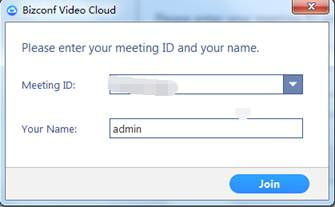
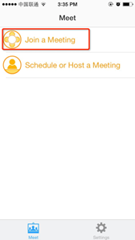
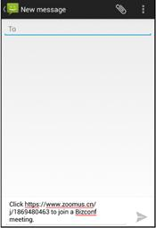

1 会议客户端
1.1 客户端下载安装
Ø PC端下载方式
步骤一、使用浏览器访问http://meeting.vcaas.cn/downCenter/downClient页面，在“会畅通讯视频云客户端”，点击“立即下载”
步骤二、下载的文件，直接点击“运行”，如下图所示：

步骤三、在弹出框点击运行，将自动安装客户端，如图：
Ø APP下载方式
方式一、使用浏览器访问http://meeting.vcaas.cn/downCenter/downClient页面，直接点击“IOS下载”或“安卓下载”，或者用手机直接扫描二维码下载应用。
方式二、IOS系统移动端可直接访问App Store，搜索“Bizconf Video”进行下载安装。
安卓系统移动端可访问安卓市场或豌豆荚，搜索“Bizconf Video”进行下载安装。
方法三、直接点击收到的入会邀请链接地址，根据页面提示下载安装。
1.2 PC端使用说明
1.2.1 加入会议
Ø 未登录用户
运行会议客户端，点击“加入会议”，在弹出窗口，输入会议ID号码以及会议中需显示姓名，再点击“加入会议”，即可加入会议。

Ø 已登录用户
在功能面板中，点击“加入会议”，在弹出窗口，输入会议ID号码以及会议中需显示姓名，再点击“加入会议”，即可加入会议。
1.2.2 安排会议
Ø 创建会议
主持人登录客户端后，即可安排会议，安排会议的步骤如下：
1、在功能面板中，点击“安排会议”
2、在弹出的安排会议面板里设置会议信息，如图：
3、点击“安排”按钮，完成会议安排
说明：选择日历，将提示添加到Outlook或Google等日历当中，同时通过Outlook或Google等向参会者发送邀请通知
Ø 编辑会议
会议成功安排后，如需要对会议属性进行修改，则可以在功能面板上点击“会议”，在会议列表中选择需要修改的会议点击“编辑”按钮，在弹出窗口中进行修改。
1.2.3 开启会议
Ø 快速开启会议
主持人登录后，在功能面板--“主页”，直接点击或，来快速开启一场会议。若点击“开始会议（默认视频关闭）”则用户入会后，摄像头为关闭状态，摄像头可以自行打开；点击“开始会议（默认视频打开）”则用户入会后，摄像头为开启状态。
说明：此处直接点击“开始会议”，每次开启会议的会议ID都是随机生成的，如希望固定会议ID，则需要勾选个人会议ID下端的“总在本机上使用个人会议ID开会”，如下图
Ø 使用个人会议ID开启会议
以主持人身份登录后，在功能面板最下方点击“会议”，直接点击个人会议ID下边的“开会”按钮，即可立即使用个人会议ID开会。
说明：个人会议ID与主持人账号绑定，ID号保持不变并且可随时开启会议。
Ø 开启已安排会议
以主持人身份登录后，在功能面板最下方点击“会议”，在会议列表中选择需要开启的会议，点击“开会”，即可立即开启已安排会议。
1.2.4 音/视频设置
Ø 音频设置
1、首次入会音频设置
首次加入会议后，会自动弹出“连接电脑音频”提示框，可直接点击“连接电脑音频”，连接电脑音频后才能听到会场声音，已经连接本机电脑麦克。建议可直接勾选“加入音频会议时使用本地麦克风和音箱”。
2、手动连接音频
如果入会后未连接音频，则可看到左下角为，直接点击喇叭图标，可弹出“连接电脑音频选项”，直接点击连接即可，当图标变为，则表示已经成功连接音频。
3、静音/解除自我静音
参会者如想自我静音，则直接点击右下角，当图标变为，则表示已经自我静音。再点击一次喇叭，则可解除自我静音。
4、更改默认麦克风
若电脑连接多个麦克风/扬声器设备，当参会者想使用其他麦克风/扬声器设备，则可以直接点击左下角 ，在弹出的设置窗口中，下拉进行选择。
，在弹出的设置窗口中，下拉进行选择。
5、麦克风/扬声器检测
参会者在会议当中，若音频设备已成功连接，但麦克风/扬声器仍无法正常使用，则建议可点击左下角设置，在弹出的设置窗口中，点击“检测扬声器/麦克风”以用来检测麦克风/扬声器设备是否可正常工作。
Ø 视频设置
1、启动/关闭视频
参会者如想启动本机视频，可点击左下角图标，当标识变为 ，则表示已开启本机视频。再点击一次图标，则可关闭本机视频。
，则表示已开启本机视频。再点击一次图标，则可关闭本机视频。
2、更改默认摄像头
若电脑连接多个摄像头，当参会者想更改当前使用摄像头，则可以点击左下角 ，在弹出的设置窗口中，点击“视频”，下拉进行修改。
，在弹出的设置窗口中，点击“视频”，下拉进行修改。
1.2.5 视频布局设置
Ø 界面布局
会议客户端支持在会议中切换会议界面显示模式，以满足您不同的会议需求。在会议中，提供画廊视图和演讲者视图两种界面布局模式，进入会议默认为演讲者视图。
- 在会议中，单击右上角，可将画面布局切换为画廊模式，即参会者视频窗口等分显示在屏幕中，一屏最多显示25个参会者，超出数量则分页显示。
- 在会议中，单击右上角，可将画面布局切换为演讲者模式，此时讲话者视频窗口最大化显示，其他参会者以小视频窗口显示在上方，小视频最多显示4路，超出视频可通过手动点击滚动显示。
Ø 视频选定
演讲者视图模式下，参会者想要将上方某个小视频窗口最大化显示，可将鼠标放在此参会者视频画面，点击右键，在出现的菜单栏中选择“选定视频”，被选择窗口画面会最大化显示。点击，则最大化窗口会切换到当前发言人画面。此功能适用于所有参会人。
演讲者视图下，主持人想要所有参会人的最大化窗口中看到固定的某为参会人画面，则可将鼠标放在此参会者视频画面，点击右键，在出现的菜单栏中选择 ，则布局为演讲者试图下的所有参会者的最大化窗口中都会显示主持人选择的参会者视频画面。此功能仅适用于主持人。
，则布局为演讲者试图下的所有参会者的最大化窗口中都会显示主持人选择的参会者视频画面。此功能仅适用于主持人。
Ø 其他功能按钮
处于演讲者试图下的会议，可通过一些功能按钮来管理上方的小视频的布局显示。
点击，隐藏视频缩略图
点击，只显示当前发言者视频
点击，显示发言人的大视频
点击 ，显示视频缩略图
，显示视频缩略图
1.2.6 会控功能
通过主持人身份用户可对会议以及参会者进行会控管理，包括：全场静音、锁定屏幕共享、锁定会议、赋予参会者录制权限、关闭与会者摄像头、修改与会者入会显示姓名、移除与会者、转移主持人权限、拿回主持人权限等功能。
主持人在会议中点击最下方菜单栏中的，即可弹出管理窗口，如下图所示：
Ø 音频控制
为了保证会议中主讲人的声音不被干扰，为与会者创造一个良好的会议环境，主持人在会议中可以选择全场静音，也可以随时开启或者关闭会场任意与会者的麦克风。
1、全体静音
主持人点击按钮，弹出提示框，如下图所示，直接点击“是”，除主持人外所有参会者麦克风被静音，麦克风图标变为，静音后参会者可自我解除静音；如果想禁止参会者自我解除静音，则需要把“允许参会者自我解除静音”前的√抹去。
2、解除全体静音
主持人点击，解除全体参会者静音状态，参会者麦克风为开启状态，图标变更为。
3、针对个别参会者进行静音/取消静音
主持人鼠标放在需操作参会人列表，点击后边的按钮，可以对单个用户静音，静音后按钮变为，点击，可为当前用户解除静音。
Ø 屏幕共享控制
默认情况下，所有参会者都有屏幕共享权限，为了保证会议中主讲人的演讲不受其他屏幕干扰，主持人在会议中可以选择锁定屏幕共享，禁止参会者共享屏幕。
主持人可以点击，锁定后所有参会者不可进行屏幕共享操作。
Ø 锁会功能
为保证会议的安全性与私密性，当所有与会者进入会议后，主持人可将会议进行锁定。会议被锁定后，参会者将不能再进入会议。
主持人点击“更多”，在菜单列表中点击“锁定会议”，则会议即被锁定，如下图所示：
Ø 管理参会者
主持人选择需管理的参会者，点击后边的更多按钮，如下图所示：
点击“关闭视频”，可关闭此参会者摄像头，关闭后，主持人不可将其打开。
点击“设为主持人”，可将主持人身份赋予此参会者，此时点击
可收回主持人权限。
点击“允许录制”，当前参会者拥有录制权限。
点击“改名”，可修改当前参会者在会议中的显示姓名。
点击“移除”，可将当前参会者从会议中踢出。
1.2.7 数据共享
Ø 数据共享
参会者在会议中点击最下方菜单栏中的 ，在弹出的选择框中选择需共享内容，点击“共享屏幕”，可共享本机桌面或应用。
，在弹出的选择框中选择需共享内容，点击“共享屏幕”，可共享本机桌面或应用。
Ø 功能描述
进入数据共享模式后，鼠标放在桌面最上方会自动显示悬浮菜单，如图：
暂停：不关闭数据共享窗口，数据分享内容停留在点击“暂停”时内容
共享一个新的窗口：直接在弹出窗口中选择一个新的文件内容进行共享
注释：可在当前窗口中对内容进行注释，注释内容同时分享给其他参会者
在悬浮窗口中点击“注释”下方会出现注释工具菜单，菜单栏功能介绍如下：
当鼠标处于“画笔”或“激光笔”状态下，点击，可以恢复鼠标状态。
点击，会出现，可选择一种形状进行标注。
点击，会出现，可以选择激光笔或箭头进行标注。
点击，鼠标变为橡皮擦图标，可点击擦除目标内容。
点击，可选择标注所需颜色，和标注线条所需宽度。
点击，撤销掉刚才的标注操作。
点击，恢复刚才被撤销掉的内容。
点击 ，可清除掉所有标记内容，做为主持人还可清除掉所有参会人员的标注内容。
，可清除掉所有标记内容，做为主持人还可清除掉所有参会人员的标注内容。
远程控制：可将桌面的控制权限赋予其他参会者
停止共享：直接关闭共享内容，所有参会者画面回到视频布局
1.2.8 开启双屏显示
目前软件支持发送和接收双流，如果电脑有双屏幕的情况下，可以开启双屏模式，这样在进行数据共享时，一个屏幕可以接收视频图像，另外一个屏幕可以接收数据图像。
在功能面板点击 ，选择，勾选“启用双屏幕显示”。
，选择，勾选“启用双屏幕显示”。
1.2.9 语言切换
默认情况下客户端的语言与系统环境语言保持一致，如果用户客户端想切换语言，建议在加入会议前，在任务栏点击图标右键，在菜单栏选择“切换语言”，选择自己喜欢的语言，目前语言切换包括英文、中文和繁体中文。如果会议中需要切换语音，则会自动退会。
1.2.10 邀请用户
Ø 会议前邀请
1、安排会议时直接进行用户邀请
主持人登录后在功能面板上通过安排会议时，可直接在日历选框中选择“Outlook”、“Google 日历”或“其他日历”，点击安排的时候会自动调起邮箱客户端或者网页端，并且邀请内容复制在邮箱中，可直接填写收件人地址进行邮件邀请，发送后会议信息会自动添加到日历中。
2、使用个人会议开会时进行用户邀请
主持人希望通过个人会议室开会，可在功能面板点击“会议”，在个人会议ID下点击“安排”，选择“Outlook日历”或“Google日历”，用法与上同。或点击”复制邀请邮件信息“，将邀请内容复制并粘贴在邮件或通过即时通讯工具发送给被邀请者。
3、已安排的会议，进行用户邀请
会议已经安排好后，如想再邀请用户，可在功能面板点击“会议”，在对应的会议下点击“复制邀请信息”，会议信息会自动被复制，可将邀请内容粘贴在邮件或通过即时通讯工具发送给被邀者。

Ø 会议中邀请
参会者在会议中点击最下方菜单栏中的，在弹出框中点击“默认邮箱客户端”，则会直接调起电脑上安装的默认邮件客户端如Outlook，并自动复制会议信息到邮箱中，如点击Gmail或Yahoo邮件，吊起网页版邮箱地址。也可以点击最下方的“拷贝URL”或“拷贝邀请信息”直接复制邀请内容，通过邮箱或即时通讯工具发送给受邀者。
1.2.11 聊天功能
参会者在会议中点击最下方菜单栏中的，在聊天窗口中可群发消息，也可单独点击某位参会者名字与其进行私聊。点击“保存聊天记录”，可将所有聊天记录以.txt格式进行保存，保存路径同录制文件路径。
1.2.12 录制功能
Ø 录制功能
参会者在会议中直接点击最下方菜单栏中的，即可对会议进行录制，录制状态下图标变为，点击“停止录制”，则录制被停止。会议结束后，系统会自动将录制文件转换为MP4格式进行保存，如下图所示。如果未点击“停止录制”，直接点击结束会议，则系统也会自动将录制文件进行转换与保存。
Ø 录制文件路径设置
点击功能面板左上角的，在弹出的设置窗口，点击“录像”，“更改保存位置”可以修改录制文件的保存路径，也可点击“打开”打开录制文件所在的文件夹。
1.2.13 退出会议
Ø 参会者退会
参会者退出会议可直接点击右下角，在弹出窗口中直接点击“离开会议”即可。
Ø 主持人退会
主持人退出会议，可直接点击右下角，在弹出窗口中如果点击“结束会议”则会议被结束，所有参会者被迫离开会议。如果点击“离开会议”，则只有主持人离会，其他参会者仍在会议中。
备注：若主持人离开会议，则建议在离开前指定一个参会者做为主持人，如果未指定情况下，则系统会自动分配一个参会者做为主持人。
1.3 IOS版本客户端使用说明
1.3.1 加入会议
Ø 直接加入会议流程
打开客户端－点击加入会议－输入会议ID－输入姓名－点击加入会议－即可入会
Ø 用户登录后参加会议流程
打开客户端－登录－邮箱/密码－登录－加入会议－会议ID－加入会议

登录后自动获取账号姓名
1.3.2 开启会议
Ø 召开会议
打开客户端－登录－填写用户名/密码－登录－安排或主持会议－设置好登录信息－点击召开会议
PMI设置，视频/音频设置，提前入会设置，密码设置；
使用PMI时，会议ID和PMI号码相同，否则会议ID由系统随机生成；
Ø 通过个人会议ID召开会议
也可以通过登录后首页安排或主持会议－我的会议－开启个人会议（即使用个人会议ID）
1.3.3 安排会议
打开客户端－登录成功后（登录步骤同前）－安排或主持会议－安排会议－填写资料后点击完成－弹出发送邮件邀请后－我的会议中即可查看预约会议也可随时开始会议；
1.3.4 会议设置
登录成功后－点击设置按钮－分用户/会议/关于的三部分设置；
头像和姓名设置，退出登录；
会议设置中连接语音/麦克风静音/开启摄像头/AirPlay关于手机屏幕共享的设置；
AirPlay是iOS7后新增加功能，通过AirPlay功能可以实现影音图片等文件的无线播放，播放的终端设备也要支持相应的功能；
软件版本和意见反馈
1.3.5 邀请用户
个人会议邀请－登录成功后－安排或主持会议－我的会议－发送邀请即可通过短线/邮件/复制链接邀请；
预约会议邀请－登录成功后－安排或主持会议－我的会议－点击会议弹出详情－添加受邀者
点击会议信息，弹出会议详情－添加受邀请者，可以发送短信/邮件/复制邀请连接
会议进行中可以通过底部邀请按钮发出邮件/短信/复制链接/会议室系统发出邀请；
1.3.6 退出会议
会议进行中右侧上方离开按钮后可选择结束/离开会议；
如果选择结束会议，所有在会人员全部强制退出，如果选择离开会议，只会本人离开会议，其他人正常开会；
1.4 Android版本客户端使用说明
1.4.1 开启会议
进入app主页面，点击登录按钮，输入视频云账号(邮箱地址)与密码，点击登录。点击“安排或主持会议”按钮。点击召开会议按钮，会议开始。
说明：“使用个人会议ID”选项打开时，将以PMI作为会议ID；该选项关闭时，会议ID由系统生成。
1.4.2 加入会议
在app首页或者会议页面点击“参加会议”按钮，输入会议ID与参会者姓名，点击“加入会议”按钮，进入会议。
1.4.3 安排会议
进入安排或主持会议界面，点击安排会议，进入安排会议界面后填写会议的主题、日期、时间等选项，填写完成后点击安排会议按钮，安排会议完成。
1.4.4 会议设置
主页面点击“设置”按钮，再点击“会议选项”选项，进入会议设置后根据提示设置会议选项。
1.4.5 邀请用户
在视频会议进行中或在安排会议界面，点击邀请
选择一种方式邀请方式(短信，邮件)
输入被邀请人的手机号码点击发送

1.4.6 退出会议
在会进行总点击结束按钮
点击结束

提示：点击“结束会议”会议被结束，所有参会者被迫离开会议。
如果点击“离开会议”，只有主持人离会，其他参会者仍在会议中。
建议：若主持人离开会议，则建议在离开前指定一个参会者作为主持人，如果未指定情况下，则系统会自动分配一个参会者作为主持人。
1.4.7 检查更新
点击设置―关于―版本

1.5 通过硬件接入会议
Ø 通过H.323协议加会
223.202.53.83##会议ID 或 223.202.53.84##会议ID
Ø 通过SIP协议加会
会议ID@223.202.53.83 或 会议ID@223.202.54.83
1.6 通过MCU接入会议
Ø 与Polycom MCU级联
1、通过Polycom MCU创建会议，
2、选择这个会议，点击邀请用户，输入会议IP地址223.202.53.83或223.202.53.84，将会议邀请到Cisco MCU的会议当中
说明：会议IP地址可以在邀请联系人的会议信息或者邀请邮件中查看
3、使用一个硬件终端或软件终端直接连入MCU
4、在界面中可以看到如下图所示内容，获取最下方五位英文验证码：
5、通过主持人身份点击，选择，在文本框中输入上述五位验证码，点击邀请，即可完成MCU于虚拟会议室的连接。
Ø 与CiscoMCU级联
1、通过Cisco MCU创建会议，
2、选择这个会议，点击邀请用户，输入会议IP地址223.202.53.83或223.202.53.84，将会议邀请到Cisco MCU的会议当中
说明：会议IP地址可以在邀请联系人的会议信息或者邀请邮件中查看
3、找到DTMF软键盘，输入会议ID、#
4、如果设置了会议的密码，则输入密码加入到会议
1.7 技术指标
1.7.1 PC性能要求
CPU：单核1GHZ
内存：2G
1.7.2 PC操作系统
Ø 微软：
Windows XP、Vista、Win 7、Win 8
Ø 苹果：
MAC10.6以上
1.7.3 移动端系统
苹果：IOS5.0以上
安卓：Android4.0以上
1.7.4 PC浏览器
Ø Windows平台：IE6以上、Firefox、Chrome、Safari5+、Operal2+
Ø 苹果平台：Safari5+、Firefox、Chrome
1.7.5 移动端浏览器
Ø IOS系统：Safari、UC、QQ
Ø Android：UC、QQ
1.7.6 兼容的硬件终端型号
|
编号 |
硬件名称 |
硬件型号 |
是否支持双流 |
|
1 |
Polycom(宝利通） |
VSX 7000* |
支持 |
|
VSX 7000e* |
支持 |
||
|
VSX 8000 |
支持 |
||
|
Group 500 |
支持 |
||
|
HDX 7000 series |
支持 |
||
|
HDX 8000 series |
支持 |
||
|
HDX 9000 series |
支持 |
||
|
HDX 6000 HD |
支持 |
||
|
RMX 2000 MCU (MPMx cards) |
支持 |
||
|
2 |
TelyHD |
Pro |
支持 |
|
3 |
LifeSize（丽视高清） |
Icon 600 |
支持 |
|
Icon 800 |
支持 |
||
|
Express 220 |
支持 |
||
|
Team 220 |
支持 |
||
|
Room 220i |
支持 |
||
|
Room 220 |
支持 |
||
|
4 |
Cisco（思科） |
Cisco C20 |
支持 |
|
Cisco C20 Plus |
支持 |
||
|
5 |
Tandberg（泰德通讯） |
Tandberg 880 MXP |
支持 |
|
Tandberg 6000 MXP |
支持 |
||
|
6 |
Aver（圆展） |
EVC 900 |
支持 |
|
EVC 130 |
支持 |
||
|
EVC 130P |
支持 |
||
|
EVC 100 |
支持 |
||
|
7 |
Huawei（华为） |
VP9030 |
支持 |
|
VP9050 |
支持 |
||
|
TE30 |
支持 |
1.7.7 网络及带宽
Ø 网络环境：
视频云软终端使用的端口：
Tcp： 80，443，8801，8802；
udp： 53，8801
在对于限制比较严格的网络环境，至于要开通53，80，443端口，才能保证视频云软终端正常开会；
硬终端使用端口号：
TCP:1024―65535
UDP：3000-10000
硬终端需要使用公网IP，或使用私有IP在防火墙或路由器做一对一映射，并开启ALG应用，如下图：
Ø 网络制式：支持３G、LTE、WIFI、WLAN
Ø 带宽要求：
|
视图模式参会方数 |
演讲者模式 |
画廊模式 |
|
|
主讲人带宽占用 |
参会者带宽会用 |
主持人 参会者带宽占用相同 |
|
|
5 |
下行平均：80Kb 上行：1Mb |
下行平均：1Mb 上行：80Kb |
下行平均：1.5Mb 上行：300Kb |
|
25 |
下行平均：80Kb 上行：1Mb |
下行平均：1Mb 上行：80Kb |
下行平均：1.5Mb 上行：80Kb |
|
60 |
下行平均：80Kb 上行：1Mb |
下行平均：1Mb 上行：80Kb |
下行平均：1.5Mb 上行：30Kb |
1.7.8 摄像头及耳机
Ø 摄像头：罗技（ Logitech ），微软， HuddlecamHD， VDO360 PTZ， VTEL HD3000PTZ，Vaddio Clearview， Freetalk HD，Hovercam Solo
Ø 耳机： Jabra，Clearone，Logitech，Plantronics，Phoenix，Voice Tracker Array Microphones，Yamaha，Revolab Fusion Wireless Microphones